We apply the pointwise adjunction criterion to recognize fibrations and then study their local and fiberwise behavior.
Proposition 6.5.1. Let \(f\colon C \to D\) be a functor. Then \(f\) is a cartesian fibration if and only if, for every object \(x\) of \(C\) and every morphism \(v\colon y\to f(x)\) in \(D\), there exists an \(f\)-cartesian lift \(u\colon\tilde{y}\to x\) of \(v\). Dually, \(f\) is a cocartesian fibration if and only if every morphism \(v\colon f(x)\to y\) admits an \(f\)-cocartesian lift with source \(x\).
Proof
The forward implication follows from the dual of Lemma 4.5.7. For the converse, write \(F\colon \Fun([1],C) \to D \vectimes{f} C\) for the directed evaluation map \(\vec{\ev}^f_1\). By Theorem 6.2.1, it suffices to show that, for every object \((v,x)\) of \(D \vectimes{f} C\), the relative slice \(\Fun([1],C)_{/(v,x)}\) admits a terminal object.
Work with the universal object \((v,x)\) in context \((D\vectimes{f}C)^{\simeq}\). An object of this relative slice consists of a morphism \(a\colon z_0\to z_1\) in \(C\), morphisms \(\beta\colon f(z_0)\to y\) and \(\gamma\colon z_1\to x\), and an identification \[ v\beta = f(\gamma)f(a). \] Choose an \(f\)-cartesian lift \(u\colon \tilde{y}\to x\) of \(v\). The specified identification \(F(u) = (v,x)\) defines an object of the relative slice. A morphism from the object above to this chosen object amounts to a morphism \(\delta\colon z_0\to\tilde{y}\) satisfying \[ u\delta = \gamma a \qquadtext{and}\qquad f(\delta) = \beta, \] compatibly with the displayed identification. Since \(u\) is \(f\)-cartesian, the defining pullback square applied to \(z_0\) says precisely that the anima of such choices of \(\delta\) is contractible. Hence the chosen object is terminal. We conclude that \(F\) admits a right adjoint. By the refined form of Theorem 6.2.1 recorded in Remark 6.2.2, these chosen terminal objects assemble into a right adjoint \(G\) of \(F\) whose counit at \((v,x)\) is the specified identification \(F(u) = (v,x)\). Hence the counit is a natural isomorphism, so \(G\) is a right adjoint section of \(F\). Therefore \(f\) is a cartesian fibration. The cocartesian statement is dual.
Lemma 6.5.2. Let \(f\colon A \to B\) be a functor and let \(\alpha\colon a \to a'\) be a morphism in \(A\). Then \(\alpha\) is \(f\)-cocartesian if and only if the square
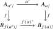
Proof
The square is a pullback if and only if the canonical map \(A_{a'/} \to A_{a/} \times_{B_{f(a)/}} B_{f(a')/}\) is an equivalence. This map fits into a commutative triangle
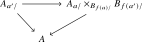
Remark 6.5.3. In more informal terms, the definition says that a morphism \(\alpha\colon a \to a'\) is \(f\)-cocartesian if and only if for any morphism \(v\colon a \to x\) in \(A\) and morphism \(w\colon f(a') \to f(x)\) in \(B\) such that the triangle
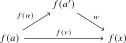 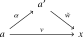
Proposition 6.5.4. Let \(p\colon C \to S\) be a locally cocartesian fibration. The following conditions are equivalent:
(1) The functor \(p\) is a cocartesian fibration;
(2) Every locally \(p\)-cocartesian morphism of \(C\) is \(p\)-cocartesian;
(3) Locally \(p\)-cocartesian morphisms are closed under composition: if \(f\colon x \to y\) and \(g\colon y \to z\) are locally \(p\)-cocartesian morphisms in \(C\) then so is \(gf\colon x \to z\).
Proof
If \(p\) is a cocartesian fibration, then condition (2) holds: indeed, if \(f\colon x\to y\) is a locally \(p\)-cocartesian morphism, then there is a unique \(p\)-cocartesian lift \(g\colon x\to y'\) of \(p(f)\). Since both \(f\) and \(g\) are locally \(p\)-cocartesian lifts of \(p(f)\) with the same source, there is a unique isomorphism \(u\colon y'\to y\) in the fiber of \(p(y)\) such that \(f=ug\). In particular, \(f\) is the composition of two \(p\)-cocartesian morphisms, hence is \(p\)-cocartesian as well. Since \(p\)-cocartesian morphisms are stable under composition, it is clear that condition (3) follows from condition (2). It remains to prove that condition (1) follows from condition (3). Let us assume that condition (3) holds and that \(f\colon x\to y\) is a locally \(p\)-cocartesian morphism. Definition 4.5.5 tells us that, in order to prove that \(f\) is \(p\)-cocartesian, it suffices to prove that, for any object \(z\) in \(C\), is a pullback square of animae. This means that we have to check that the map induced by this pullback square \[ C(y,z)\to S(p(y),p(z))\times_{S(p(x),p(z))} C(x,z) \] is an equivalence. In other words, by virtue of Proposition 1.3.1, if we consider any morphism \(g\colon x\to z\) in \(C\) as well as a morphism \(v\colon p(y)\to p(z)\) in \(S\) such that \(p(g)\) is the composition of \(v\) and \(p(f)\), we have to prove that there is a unique morphism \(u\colon y\to z\) in \(C\) such that \(p(u)=v\) and such that \(g\) is the composition of \(u\) and \(f\). We define \(u'\colon y\to z'\) as the unique locally \(p\)-cocartesian lift of \(v\) with source \(y\). Since \(u'f\) is a locally \(p\)-cocartesian lift of \(vp(f)\), there is a unique morphism \(h\colon z'\to z\) in the fiber over \(p(z)\) such that \(hu'f\) is identified with \(g\). Define \(u:=hu'\). If we have another morphism of the form \(w\colon y\to z\) in \(C\) such that \(wf=g\), and such that \(p(w)=v\), then we have a unique morphism \(k\colon z'\to z\) in the fiber over \(p(z)\) such that \(ku'=w\). In particular, we must have \[ h \, u'\, f=g \quad\text{and}\quad k\, u'\, f=g \] and the universal property of \(u'\, f\) as locally \(p\)-cocartesian lift of \(v\, p(f)\) implies that \(k\) and \(h\) must agree as terms of \(C(z',z)\). Therefore, \(u=w\) must hold true. We have proved that the locally cocartesian lifts are cocartesian. The dual of Proposition 6.5.1 therefore shows that \(p\) is a cocartesian fibration.
Proposition 6.5.5 (Interval test for local fibrations). A functor \(p\colon E\to S\) is a locally cocartesian fibration if and only if, for every anima \(A\) and functor \(A\times[1]\to S\), its pullback to \(A\times[1]\) is a cocartesian fibration.
Proof
Suppose that all the indicated pullbacks are cocartesian fibrations. Apply this to the evaluation functor \(\Map([1],S)\times[1]\to S\). In context \(\Map([1],S)\), cocartesian lifts over \(0\to1\) give locally \(p\)-cocartesian lifts of the universal morphism in \(S\). Hence \(p\) is locally cocartesian. Conversely, suppose that \(p\) has local cocartesian lifts and put \(p'\colon E'\to A\times[1]\) for such a pullback. Local cocartesian lifts are stable under base change. Up to the identifications in \(A\), a morphism in \(A\times[1]\) is either invertible or goes from \(0\) to \(1\) in the second factor. A local lift of an invertible morphism is invertible by Proposition 4.8.7. A local lift ending over \(1\) is cocartesian: every subsequent base morphism is invertible, so the local universal property gives its full universal property after transport along that identification. This is the same argument as Lemma 4.8.8. Hence all these local lifts are cocartesian. The recognition principle gives that \(p'\) is a cocartesian fibration.
Next, we show that various properties we have introduced can be checked at the level of objects. To start with, recall that a functor \(f\colon C \to D\) is a left fibration if and only if the commutative square
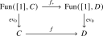
Lemma 6.5.6. Let \(f\colon C \to D\) be a functor. Then \(f\) is a left (resp. right) fibration if and only if the square is a pullback for \(i = 0\) (resp. \(i = 1\)).
Proof
By symmetry, it suffices to treat the case of left fibrations. One direction is clear by Lemma 4.2.2, so assume conversely that the square in the statement is a pullback. Write \[ \vec{\ev}^f_0\colon \Fun([1],C) \to C \vectimes{f} D \] for the directed evaluation map. By assumption, its underlying map on groupoid cores \[ (\vec{\ev}^f_0)^{\simeq}\colon \Map([1],C) = \Fun([1],C)^{\simeq} \to C^{\simeq} \times_{D^{\simeq}} \Fun([1],D)^{\simeq} = (C \vectimes{f} D)^{\simeq} \] is an equivalence, and in particular \(\vec{\ev}^f_0\) is strongly surjective. By Theorem 6.3.8, it remains to show that it is fully faithful.
The pullback hypothesis also says that for every object \(a\) of \(C\) and every morphism \(\gamma\colon f(a) \to d\) in \(D\), the anima of lifts of \(\gamma\) with source \(a\) is contractible. Consider objects \(u\colon x_0 \to x_1\) and \(v\colon y_0 \to y_1\) of \(\Fun([1],C)\). We show that the induced map
\[
\Hom_{\Fun([1],C)}(u,v) \to \Hom_{C \vectimes{f} D}((x_0,f(u)), (y_0,f(v)))
\]
is an equivalence by showing that each of its fibers is contractible. Fix a morphism in the target. It consists of a morphism \(\alpha\colon x_0 \to y_0\) in \(C\), a morphism \(\beta\colon f(x_1) \to f(y_1)\) in \(D\), and a commutative square
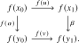
Proposition 6.5.7. Let \(f\colon C\to D\) be a right fibration, let \(c\) be an object of \(C\), and set \(d:=f(c)\). Then the induced functor \[ q\colon C_{c/}\to D_{d/}, \qquad (x,u\colon c\to x)\mapsto (f(x),f(u)\colon d\to f(x)), \] is a right fibration as well.
Proof
We apply the right-fibration criterion of Lemma 6.5.6. Fix an object \((x,u)\) of \(C_{c/}\) and write \(y=f(x)\) and \(v=f(u)\colon d\to y\). A morphism in \(D_{d/}\) with codomain \((y,v)\) consists of a diagram
\[
d\xrightarrow{v'} y'\xrightarrow{k} y
\]
together with an identification \(t : kv'=v\). Since \(f\) is a right fibration, the anima of lifts of \(k\) with codomain \(x\) is contractible; choose such a lift \(h\colon x'\to x\). Similarly, choose a lift \(u_0\colon c_0\to x'\) of \(v'\) with codomain \(x'\). Then \(hu_0\) and \(u\) are lifts with codomain \(x\) of the morphisms \(kv'\) and \(v\), identified by \(t\). Contractibility of the corresponding lift anima supplies a unique isomorphism \(i\colon c\iso c_0\) over \(\id_d\) such that \(hu_0i=u\). Setting \(u'=u_0i\) gives a commutative triangle
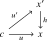
Corollary 6.5.8 (Pointwise cocartesian transformations). Let \(p\colon E\to C\) be a cocartesian fibration and let \(I\) be a category. Then \[ p_*\colon\Fun(I,E)\longrightarrow\Fun(I,C) \] is a cocartesian fibration. A natural transformation \(\alpha\colon X\to Y\) in \(\Fun(I,E)\) is \(p_*\)-cocartesian if and only if its component \(\alpha_i\colon X(i)\to Y(i)\) is \(p\)-cocartesian for every object \(i\) of \(I\).
Proof
The first assertion is Proposition 4.5.13. Under the canonical identifications \[ \Fun([1],\Fun(I,E))\simeq\Fun(I,\Fun([1],E)) \] and \[ \Fun(I,E)\vectimes{p_*}\Fun(I,C) \simeq \Fun(I,E\vectimes{p}C), \] the proof of that proposition identifies the left adjoint section of the directed evaluation map for \(p_*\) with the functor obtained by applying \(\Fun(I,-)\) to the left adjoint section for \(p\). Consequently, the comparison morphism \(\epsilon_\alpha\) associated with \(\alpha\) is the natural transformation whose component at \(i\) is the comparison morphism \(\epsilon_{\alpha_i}\) associated with \(\alpha_i\). By the definition of cocartesian morphisms, \(\alpha\) is \(p_*\)-cocartesian if and only if \(\epsilon_\alpha\) is a natural isomorphism. By Corollary 6.4.20, this holds if and only if every \(\epsilon_{\alpha_i}\) is an isomorphism, which is equivalent to every \(\alpha_i\) being \(p\)-cocartesian.
We may use this theorem to give a more concrete description of when a functor between cocartesian fibrations is a cocartesian functor.
Corollary 6.5.9. Let \(p\colon A \to S\) and \(q\colon B \to S\) be two cocartesian fibrations, and consider a commutative triangle
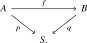
Proof
By definition, \(f\) is a cocartesian functor if and only if the natural transformation
\[
\BC_!\colon \lift^q_0 \vec{f} \to f_*\lift^p_0
\]
constructed in Construction 4.7.1 is a natural isomorphism. By Corollary 6.4.20, this may be tested pointwise. Thus, it is equivalent to asking that for every morphism \(v\colon x \to y\) in \(S\) and every object \(a\) of \(A(x)\), the morphism \(\BC_!(a,v)\) in \(\Fun([1],B)\) is an isomorphism. This morphism takes the form of a commutative square
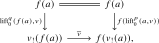
Proposition 6.5.10. Let \(p\colon A \to S\) and \(q\colon B \to S\) be cocartesian fibrations, and let \(f\colon A \to B\) be a functor over \(S\). Then the following conditions are equivalent:
(1) The functor \(f\) is a cocartesian functor over \(S\);
(2) For any functor \(T \to S\), the induced functor \(f_T\colon T \times_S A \to T \times_S B\) is a cocartesian functor over \(T\);
(3) Condition (2) holds whenever \(T\) is of the form \(T = [1] \times \Gamma\) for some anima \(\Gamma\);
(4) Condition (2) holds for \(T = [1] \times \Map([1],S)\) equipped with the evaluation map \([1] \times \Map([1],S) \to S\).
The dual conditions characterize cartesian functors between cartesian fibrations.
Proof
We showed that (1) implies (2) in Proposition 4.7.14. The implications (2) \(\implies\) (3) \(\implies\) (4) are clear. To see that (4) implies (3), consider a map \(t\colon [1] \times \Gamma \to S\). We then obtain by currying a map \(\tilde{t}\colon \Gamma \to \Fun([1],S)^{\simeq} = \Map([1],S)\), and the map \(t\) is given as the composite \[ [1] \times \Gamma \xrightarrow{1 \times \tilde{t}} [1] \times \Map([1],S) \xrightarrow{\ev} S. \] In particular, if the pullback of \(f\) to \([1] \times \Map([1],S)\) is a cocartesian functor, then its pullback to \([1] \times \Gamma\) will also be a cocartesian functor by Proposition 4.7.14, as desired.
It remains to prove (3) \(\implies\) (1). By Corollary 6.5.9, we test the Beck–Chevalley transformation at the universal morphism \(v\colon x\to y\) in context \(\Map([1],S)\) and the universal source object in the further context \(a:A(x)^{\simeq}\). By (3), pulling back along the evaluation functor \([1]\times\Map([1],S)\to S\) gives a cocartesian functor. Its Beck–Chevalley transformation over \(0\to1\) is therefore invertible. Base change identifies its component at \(a\) with \(\overline{v}\colon v_!(f(a))\to f(v_!(a))\), proving (1).
Proposition 6.5.11. Let \(p\colon E\to B\) be a cocartesian fibration. Then \(p\) is also a cartesian fibration if and only if its covariant transport functors \(u_!\colon E_a\to E_b\) admit right adjoints \(u^*\colon E_b\to E_a\), as a family indexed by \(u\in\Map([1],B)\). Dually, a cartesian fibration is cocartesian if and only if its contravariant transport functors admit left adjoints.
Proof
Work in context \(u:\Map([1],B)\), and write \(a\) and \(b\) for the source and target of \(u\). The hypothesis gives an adjunction \(u_!\dashv u^*\) between the contextual categories \(E_a\) and \(E_b\). Suppose first that such right adjoints are given. For \(y\in E_b\), compose the chosen cocartesian lift of \(u\) from \(u^*y\) with the counit: \[ u^*y\longrightarrow u_!u^*y\xrightarrow{\varepsilon_y}y. \] For \(v\colon c\to a\) and \(z\in E_c\), the transport universal properties give \[ E(z,u^*y)_v\simeq E_a(v_!z,u^*y)\simeq E_b(u_!v_!z,y) \simeq E_b((uv)_!z,y)\simeq E(z,y)_{uv}. \] The composite is induced by composition with the displayed lift. These equivalences, tested on fibers over the anima of base morphisms, give its cartesian hom pullback square. Thus we have a family of cartesian lifts. By Proposition 6.5.1, \(p\) is cartesian.
Conversely, suppose that \(p\) is both cartesian and cocartesian. The chosen cartesian lifts define the functor \(u^*\colon E_b\to E_a\) in context \(u:\Map([1],B)\). For \(x\in E_a\) and \(y\in E_b\), their universal properties give \[ E_b(u_!x,y)\simeq E(x,y)_u\simeq E_a(x,u^*y). \] The cartesian lift of \(u\) ending at \(y\) factors through the cocartesian lift starting at \(u^*y\), giving the counit \(u_!u^*y\to y\). The displayed equivalence identifies its universal-arrow map. The factorization is natural in \(y\), since the chosen lifts are functorial, so it gives a natural transformation \(\varepsilon\colon u_!u^*\to\id_{E_b}\). Apply Proposition 6.2.3 in context \(u:\Map([1],B)\) to obtain a right adjoint \(R\) of \(u_!\). The adjoint of \(\varepsilon\) is a natural transformation \(u^*\to R\). For each \(y\), it induces the displayed equivalence on hom animae, followed by the adjunction equivalence, and is therefore an isomorphism by Exercise 2.6.2. The objectwise isomorphism criterion makes \(u^*\to R\) a natural isomorphism. Thus \(u^*\) itself is right adjoint to \(u_!\) with the indicated counit. The dual argument proves the last assertion.
Proposition 6.5.12. Consider a commutative diagram
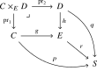
(1) The induced functor \(C \times_E D \to S\) is a cocartesian fibration;
(2) The projection functors \(\pr_1\) and \(\pr_2\) are cocartesian functors over \(S\);
(3) For every other cocartesian fibration \(T \to S\) and cocartesian functors \(t_C\colon T \to C\) and \(t_D\colon T \to D\) over \(S\) equipped with an identification \(g t_C = h t_D\) over \(S\), the induced functor \((t_C,t_D)\colon T \to C \times_E D\) is a cocartesian functor over \(S\).
Proof
Write \(\pi\colon C\times_E D\to S\) for the induced functor. An object of the pullback consists of objects \(x\) of \(C\) and \(y\) of \(D\) together with a specified identification \(g(x) = h(y)\). Let \(w\colon s_0\to s_1\) be a morphism in \(S\), and choose \(p\)- and \(q\)-cocartesian lifts \[ u\colon x_0\to x_1 \qquadtext{and} \qquad v\colon y_0\to y_1 \] of \(w\). Since \(g\) and \(h\) are cocartesian functors, \(g(u)\) and \(h(v)\) are \(r\)-cocartesian. Their sources are identified by the pullback datum, so uniqueness of cocartesian lifts supplies a unique identification \(g(x_1) = h(y_1)\) compatible with \(g(u)\) and \(h(v)\). Hence \((u,v)\) defines a morphism in \(C\times_E D\).
We verify the local universal property of \((u,v)\). Consider a compatible pair of morphisms from \((x_0,y_0)\) to an object \((x',y')\) over \(s_1\) whose image under \(\pi\) is \(w\). The universal properties of \(u\) and \(v\) give unique vertical factorizations \(x_1\to x'\) and \(y_1\to y'\). Their images in \(E\) are compatible: after precomposition with the \(r\)-cocartesian morphisms \(g(u)\) and \(h(v)\), the required compatibility is exactly that of the original pair, and the universal property of these \(r\)-cocartesian morphisms detects the compatibility uniquely. Thus \((u,v)\) is locally \(\pi\)-cocartesian.
Now let \(a\) be any locally \(\pi\)-cocartesian lift of \(w\) with source \((x_0,y_0)\). Comparing \(a\) with the componentwise lift just constructed, uniqueness of locally \(\pi\)-cocartesian lifts gives an isomorphism between their targets in the fiber over \(s_1\). Hence the projections of \(a\) are \(p\)- and \(q\)-cocartesian. We have proved that the locally \(\pi\)-cocartesian morphisms are precisely the compatible pairs of \(p\)- and \(q\)-cocartesian morphisms. Such pairs are stable under composition, so Proposition 6.5.4 implies that \(\pi\) is a cocartesian fibration. The same characterization shows that both projections preserve cocartesian morphisms, and hence are cocartesian functors.
Finally, let \(T\to S\) and \((t_C,t_D)\) be as in (3). A cocartesian morphism of \(T\) is sent by \(t_C\) and \(t_D\) to a compatible pair of \(p\)- and \(q\)-cocartesian morphisms. By the characterization just proved, its image in \(C\times_E D\) is \(\pi\)-cocartesian. Hence \((t_C,t_D)\) is a cocartesian functor over \(S\).
Proposition 6.5.13 (Fiberwise criterion for cocartesian fibrations). Let \(p\colon E\to S\) and \(q\colon D\to S\) be cocartesian fibrations, and let \(u\colon E\to D\) be a cocartesian functor over \(S\). Then \(u\) is a cocartesian fibration if and only if the following conditions hold:
(1) For every object \(s\) of \(S\), the induced functor \(u_s\colon E_s\to D_s\) is a cocartesian fibration.
(2) For every morphism \(v\colon s\to t\) in \(S\), the transport functor \(v_!^E\colon E_s\to E_t\) sends \(u_s\)-cocartesian morphisms to \(u_t\)-cocartesian morphisms.
Proof
Condition (1) is interpreted at the universal object in context \(S^{\simeq}\), and condition (2) at the universal morphism in context \(\Map([1],S)\), with the fiber categories obtained by substitution along its source and target. First observe that every \(p\)-cocartesian morphism is \(u\)-cocartesian: its image under \(u\) is \(q\)-cocartesian, so this follows by cancellation of pullback squares in Definition 4.5.5.
Suppose that \(u\) is a cocartesian fibration. Condition (1) follows by base change.
Moreover, a morphism in \(E_s\) is \(u_s\)-cocartesian if and only if its image in \(E\)
is \(u\)-cocartesian, by
Observation 4.8.6 and Proposition 6.5.4.
For such a morphism \(\alpha\colon x\to y\) and a morphism \(v\colon s\to t\),
naturality of the \(p\)-cocartesian lift gives a commutative square
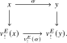
Conversely, suppose that (1) and (2) hold. We first show that every
\(u_s\)-cocartesian morphism \(\alpha\colon x\to y\) in \(E_s\) is \(u\)-cocartesian
in \(E\). For an object \(z\) of \(E\), write \(t=p(z)\) and consider the square
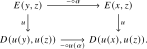
Let \(\beta\colon u(e)\to d\) be a morphism in \(D\), and write \(v=q(\beta)\colon s\to t\). Choose a \(p\)-cocartesian lift \(\eta\colon e\to v_!^E(e)\). Its image under \(u\) is \(q\)-cocartesian, so \(\beta\) factors as \(\overline\beta\,u(\eta)\) for a morphism \(\overline\beta\colon u_t(v_!^E(e))\to d\) in \(D_t\). By (1), choose a \(u_t\)-cocartesian lift \(\lambda\colon v_!^E(e)\to e'\) of \(\overline\beta\). Both \(\eta\) and \(\lambda\) are \(u\)-cocartesian by the preceding arguments, and pasting their mapping-anima pullback squares shows that \(\lambda\eta\) is \(u\)-cocartesian. Moreover, it is a lift of \(\beta\) with source \(e\).
The dual of Proposition 6.5.1 now shows that \(u\) is a cocartesian fibration.
Corollary 6.5.14 (Fiberwise criterion for left fibrations). Let \(p\colon E\to S\) and \(q\colon D\to S\) be cocartesian fibrations, and let \(u\colon E\to D\) be a cocartesian functor over \(S\). Then \(u\) is a left fibration if and only if \(u_s\colon E_s\to D_s\) is a left fibration for every object \(s\) of \(S\).
Proof
The forward implication follows from stability of left fibrations under base change. Conversely, suppose that every \(u_s\) is a left fibration. Every morphism in \(E_s\) is then \(u_s\)-cocartesian, so both conditions of Proposition 6.5.13 hold. Hence \(u\) is a cocartesian fibration. For an object \(d\) of \(D\), put \(s=q(d)\). In the context of \(d\), its fiber is \[ E_d\simeq E_s\times_{D_s}*, \] where \(*\to D_s\) selects \(d\). This is an anima since \(u_s\) is a left fibration. Thus \(u\) is a left fibration by Lemma 6.1.8.
Proposition 6.5.15. Let \(p\colon C\to A\times B\) be a functor. We denote by \(\pr_A\colon A\times B\to A\) and \(\pr_B\colon A\times B\to B\) the obvious projections, and we assume that \(\pr_B p\colon C\to B\) is a cocartesian fibration. The property that \(p\) is a cocartesian fibration is equivalent to the following list of properties to be fulfilled altogether:
(i) The functor \(p\colon C\to A\times B\) is cocartesian over \(B\), meaning that it sends \(\pr_Bp\)-cocartesian morphisms to \(\pr_B\)-cocartesian morphisms;
(ii) For any object \(b\) of \(B\), the induced functor \(p_b\colon C_b\to A\) is a cocartesian fibration;
(iii) For any morphism \(v\colon b_0\to b_1\) in \(B\), the covariant transport functor \[ v_!\colon C_{b_0}\to C_{b_1} \] sends \(p_{b_0}\)-cocartesian morphisms to \(p_{b_1}\)-cocartesian morphisms.
Proof
Write \(q=\pr_Bp\). By Example 4.8.5 and Proposition 6.5.4, the \(\pr_B\)-cocartesian morphisms are the pairs \((u,v)\) for which \(u\) is an isomorphism in \(A\) and \(v\) is an arbitrary morphism in \(B\).
Suppose first that \(p\) is a cocartesian fibration. We repeatedly use the pointwise characterization from Definition 4.5.5: pasting the relevant pullback squares shows that a \(p\)-cocartesian morphism whose image is \(\pr_B\)-cocartesian is \(q\)-cocartesian, and that a \(q\)-cocartesian morphism whose image is \(\pr_B\)-cocartesian is \(p\)-cocartesian. Given a \(q\)-cocartesian morphism with source \(x\) and image \(v\) in \(B\), compare it with a \(p\)-cocartesian lift at \(x\) of \((\id_{\pr_Ap(x)},v)\). The latter is \(q\)-cocartesian by the first implication, so uniqueness of \(q\)-cocartesian lifts identifies the two morphisms. Its image under \(p\) is therefore \(\pr_B\)-cocartesian, which proves (i). Condition (ii) follows from stability of cocartesian fibrations under base change.
For (iii), let \(\alpha\) be a \(p_{b_0}\)-cocartesian morphism and form its naturality square under transport along \(v\colon b_0\to b_1\). Its vertical morphisms are \(q\)-cocartesian and have \(\pr_B\)-cocartesian images by (i), hence they are \(p\)-cocartesian by the second implication above. The upper horizontal morphism is also \(p\)-cocartesian, by the base-change characterization of cocartesian morphisms. Consequently the two composites around the square are \(p\)-cocartesian, and cancellation in Lemma 4.5.12 shows that the lower horizontal morphism is \(p\)-cocartesian. Since it lies over the identity of \(b_1\), it is \(p_{b_1}\)-cocartesian. This proves (iii).
Conversely, assume all three conditions.
In the context of an object \(b\) of \(B\), the fiber of \(\pr_B\) is \(A\). For a morphism \(v\colon b_0\to b_1\) in \(B\), transport between these fibers is the identity of \(A\), considered in the context of \(v\). Condition (i) thus ensures that we have canonical commutative triangles of the form
 for each morphism \(v\colon b_0\to b_1\) in \(B\).
Condition (ii) ensures that each projection \(p_b\) is a cocartesian fibration and
condition (iii) says that each of these functors \(v_!\) in the triangles above
preserves cocartesian morphisms over \(A\).
for each morphism \(v\colon b_0\to b_1\) in \(B\).
Condition (ii) ensures that each projection \(p_b\) is a cocartesian fibration and
condition (iii) says that each of these functors \(v_!\) in the triangles above
preserves cocartesian morphisms over \(A\).
Let us consider a morphism \(f\colon x_0\to x_1\) in \(C\).
Its image by \(p\) is of the form \(p(f)=(u,v)\) with \(u\colon a_0\to a_1\) and \(v\colon b_0\to b_1\)
morphisms in \(A\) and in \(B\), respectively. This yields a commutative diagram of the following form in \(A\times B\):
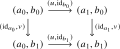 in which the vertical maps are \(\pr_B p\)-cocartesian morphisms (the commutativity of the square comes from the fact that the formation of \(v_!(x_0)\) is functorial in \(x_0\) and from the identification
\(\varepsilon_{v_!(x_0)}=v_!(\varepsilon_{x_0})\) due to condition (iii)).
There is a unique morphism \(g\colon v_!(x_0)\to x_1\) such that \(g\eta_{x_0}=f\).
This factorization includes an identification of \(\pr_B p(g)\) with the identity of \(b_1\).
In other words, we can see \(g\) as a map in \(C_{b_1}\). There is thus a unique morphism
of the form \(h\colon u_!v_!(x_0)\to x_1\) in \(C\) such that \(h\varepsilon_{v_!(x_0)}=g\)
and such that \(\pr_B p(h)=\id_{b_1}\). In other words, the morphism \(\varepsilon_{v_!(x_0)}\eta_{x_0}\)
is a locally \(p\)-cocartesian lift of \((u,v)\). This proves that \(p\) is a locally cocartesian fibration.
in which the vertical maps are \(\pr_B p\)-cocartesian morphisms (the commutativity of the square comes from the fact that the formation of \(v_!(x_0)\) is functorial in \(x_0\) and from the identification
\(\varepsilon_{v_!(x_0)}=v_!(\varepsilon_{x_0})\) due to condition (iii)).
There is a unique morphism \(g\colon v_!(x_0)\to x_1\) such that \(g\eta_{x_0}=f\).
This factorization includes an identification of \(\pr_B p(g)\) with the identity of \(b_1\).
In other words, we can see \(g\) as a map in \(C_{b_1}\). There is thus a unique morphism
of the form \(h\colon u_!v_!(x_0)\to x_1\) in \(C\) such that \(h\varepsilon_{v_!(x_0)}=g\)
and such that \(\pr_B p(h)=\id_{b_1}\). In other words, the morphism \(\varepsilon_{v_!(x_0)}\eta_{x_0}\)
is a locally \(p\)-cocartesian lift of \((u,v)\). This proves that \(p\) is a locally cocartesian fibration.
By Proposition 6.5.4, it remains to prove that locally \(p\)-cocartesian morphisms are stable under composition in \(C\). Every locally \(p\)-cocartesian morphism is isomorphic to one of the form \(\varepsilon_{v_!(x_0)}\eta_{x_0}\) constructed above. Consider two composable morphisms in this normal form, with composable \(B\)-components \(v\) and \(v'\). Naturality of the \(q\)-cocartesian lift gives a commutative square as above which moves the fiberwise cocartesian part of the first morphism past the \(B\)-transport part of the second. By condition (iii), the transported horizontal morphism is again cocartesian in the target fiber. We may therefore compose the two horizontal parts using closure of \(p_b\)-cocartesian morphisms under composition, and compose the two vertical parts using closure of \(q\)-cocartesian morphisms under composition. The canonical identifications \[ (v'v)_! = v'_!v_! \] from Corollary 4.5.11 identify the resulting composite with the normal-form lift for the composite morphism in \(A\times B\). Thus locally \(p\)-cocartesian morphisms are closed under composition, and \(p\) is a cocartesian fibration.
Our next goal is to provide a fiberwise criterion for a map between (co)cartesian fibrations to be an equivalence. In contrast to the statement for left (resp. right) fibrations from Lemma 6.1.12, the statement for (co)cartesian fibrations requires that we restrict attention to (co)cartesian functors, a notion that was defined in Section 4.7.
Lemma 6.5.16. Let be a commutative triangle such that \(p\) and \(q\) are cartesian (resp. cocartesian) fibrations and \(f\) is a cartesian (resp. cocartesian) functor over \(S\). If the induced functor \(f_s\colon C_s\to D_s\) is fully faithful for every object \(s\) of \(S\), then \(f\) is fully faithful.
Proof
We treat the cartesian case; the cocartesian case is dual. Let \(x_0\) and \(x_1\) be objects of \(C\), and write \(s_i=p(x_i)\). The induced map \[ C(x_0,x_1) \longrightarrow D(f(x_0),f(x_1)) \] is a map of animae over \(S(s_0,s_1)\). We show that it is an equivalence on every fiber. Fix a morphism \(w\colon s_0\to s_1\) and choose a \(p\)-cartesian lift \[ \widetilde{w}\colon w^*x_1\to x_1. \] Since \(f\) is a cartesian functor, \(f(\widetilde{w})\) is a \(q\)-cartesian lift of \(w\). The universal properties of these cartesian lifts give equivalences \[ C(x_0,x_1)_w \simeq C_{s_0}(x_0,w^*x_1) \] and \[ D(f(x_0),f(x_1))_w \simeq D_{s_0}(f(x_0),f(w^*x_1)). \] Under these equivalences, the map on fibers is induced by \(f_{s_0}\) and is therefore an equivalence by hypothesis. Thus the map on hom animae is an equivalence, and \(f\) is fully faithful.
Theorem 6.5.17. A (co)cartesian functor between (co)cartesian fibrations is an equivalence if and only if it is an equivalence on fibers. More precisely, consider a commutative triangle such that \(p\) and \(q\) are cartesian (resp. cocartesian) fibrations and that \(f\) is a cartesian (resp. cocartesian) functor over \(S\). If for every object \(s\) of \(S\) the induced functor \(f_s\colon C_s \to D_s\) is an equivalence, then \(f\) is an equivalence.
Proof
If \(f\) is an equivalence, then every functor \(f_s\) on fibers is an equivalence by base change. Conversely, assume that \(f_s\colon C_s\to D_s\) is an equivalence for every object \(s\) of \(S\). Work in context \(y:D^{\simeq}\) and set \(s=q(y)\). There is a pullback square
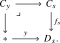
Corollary 6.5.18. Consider a commutative square of categories over \(S\), i.e. a commutative diagram
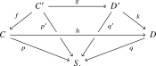 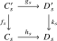
Proof
Define the category \(E\) as the pullback \(C \times_D D'\). By Proposition 6.5.12, the resulting functor \(C \times_D D' \to S\) is a cocartesian fibration and the induced functor \(C' \to E\) is a cocartesian functor. Our task is to show that it is an equivalence. By Theorem 6.5.17 it will suffice to show that the induced map \(C'_s \to E_s\) on fibers is an equivalence for every object \(s\) of \(S\). But since taking the fiber commutes with pullbacks, this map is the canonical comparison map \(C'_s \to C_s \times_{D_s} D'_s\) coming from the induced square on fibers. Since this square was assumed to be a pullback square, this map is indeed an equivalence, finishing the proof.